Homepage
CFS Mask Creation
Creation allows the user to create various types of
CFS-Crafter-Mask. The created CFS-Crafter-Mask and the mask's basic information can be
viewed & saved in the
preview interface.
1. Mask Selection
CFS-Crafter allows the user to create CFS masks with a variety of
different features. When choosing the type of masks, the user should select the options following a left-to-right
order.
1.1. Patterned Element:
Patterned Element Mask consists of mondrian patterns with certain
type of elements ranging from simple geometrics such as circles or
squares, to more complicated elements such as objects traced from an
image. Here is the detail of different type of patterns that's available:
1.1.1. Geometric Shape
The first type of pattern is geometric shape, which means the modrain
pattern is consists of simple geometric shapes of various features,
which include:
1.1.1.1. Pattern Shape
Pattern Shape decides the shape of each element in the mondrian masks,
which can be circle, square or diamond.
The size of the patterns is proportional to the dimension of the
stimuli. There are 5 different levels for patch size. For the
circle patch, the radius is from 8% to 18% of the maximum
dimension of the stimuli. The size of square and
diamond patches are set such that they have roughly the same
area as the circle patches.
 Fig.1a - Circle Mondrain Pattern
Fig.1a - Circle Mondrain Pattern
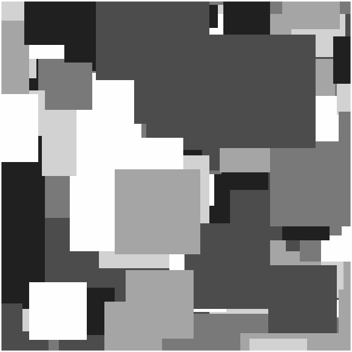
Fig.1b - Square Mondrain Pattern
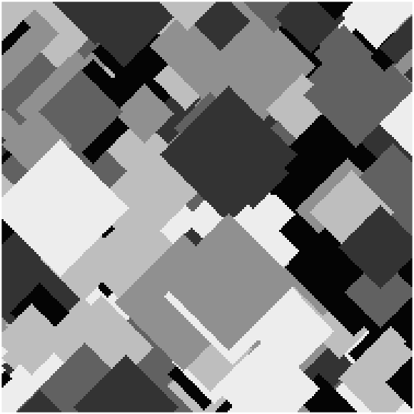
Fig.1c - Diamond Mondrain Pattern
1.1.1.2. Pattern Fill
The fill of the pattern can be either
solid colours or
noise patterns.
Fig.2a - Circle Mondrain Pattern with Solid Fill
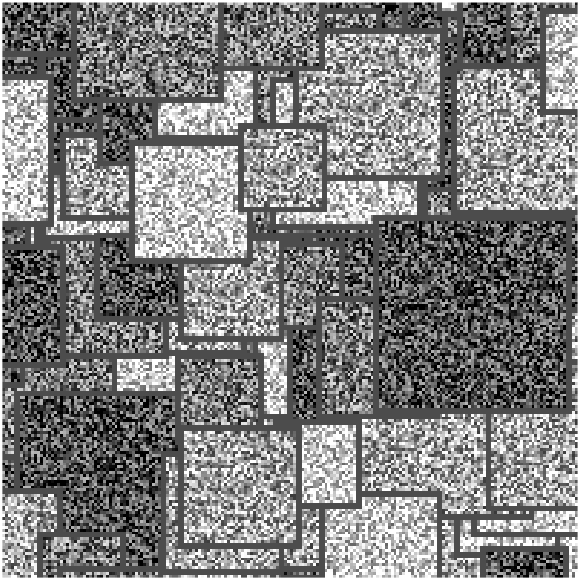
Fig.2b - Square Mondrain Pattern with White Noise Fill
1.1.1.3. Pattern Colour
The Solid filled pattern can be either in
grayscale or in RGB colour.
For the grayscale filled pattern, there are 6 different luminance
levels used (0; 0.2; 0.4; 0.6; 0.8; 1.0) before RMS contrast & mean
luminance adjustment.
For RGB colour filled pattern, there are 5 differet
colours([0 0 0]; [1 0 0]; [0 1 0]; [0 0 1]; [1 1 0]) used before RMS
contrast & mean luminance adjustment.
Fig.3a - Grayscale Mondrain Pattern
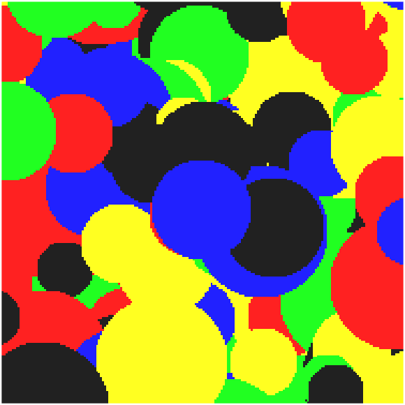
Fig.3b - Rgb Colored Mondrain Pattern
1.1.1.4. Pattern Noise Type
Noise filled pattern will be grayscaled White Noise or Pink Noise.
Fig.4a - White Noise Filled Pattern
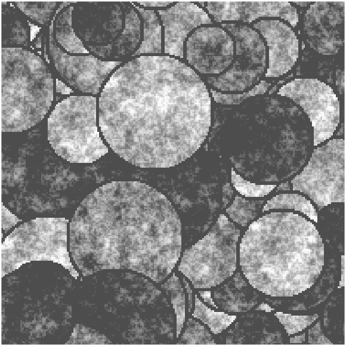
Fig.4b - Pink Noise Filled Pattern
1.1.2: Traced Items
The user can also trace up to 5 different faces/objects and create mondrian
patterns from these traced items. CFS-Crafter allows users to trace up to 5 different objects/faces to
create a
stimuli sequence. Click here for help on item tracing.
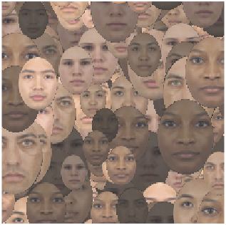
Fig.5a - Traced Face Mondrain Pattern
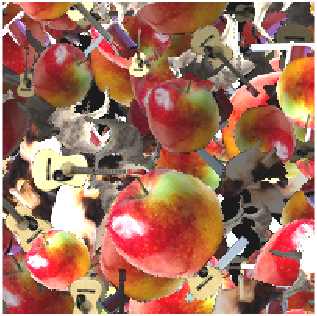
Fig.5b - Traced Object Mondrain Pattern
1.2. Noise Masks
Masks consists of dynamic sequence of white noise or pink noise.
1.2.1. White Noise
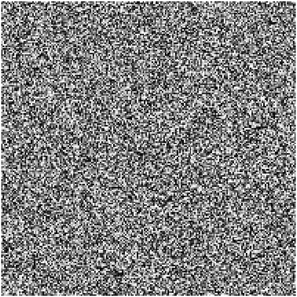
Fig.6a - White Noise Mask
White Noise consists of random intensity between 0 to 1 at all pixels before RMS contrast &
mean luminance
adjustments, which leads to roughly constant power spectral density (PSD) across all frequencies.
1.2.2. Pink Noise
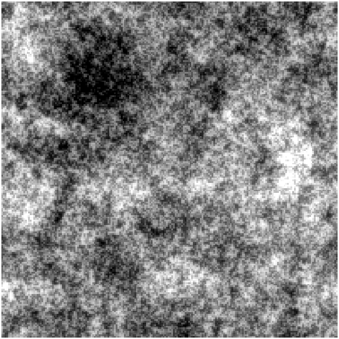
Fig.6b - Pink Noise Mask
Pink Noise has PSD inversely proportional to the frequency. Which closely resemble
the
natural scene.
2. Mask Creation Parameters
Users need to enter the parameters for the mask they want to create.
2.1. Mask Dimensions:
Width & height in pixels, the size in
the degree of visual angle will be calculated & shown in the preview
interface.
2.2. Mask Update Rate & Mask Sequence Duration:
The Mask Update Rate is the rate at which the images is updated in the
stimuli sequence.
Notice Mask Update Rate is not the same as Temporal Frequency, even through they both
in the unit of Hertz. Click here for details on Temporal
Frequency and means to manipulate it.
Mask Sequence Duration is the duration of the created CFS mask stimulus with unit of second. Notice
the duration input here should be relative short (a few seconds at most), since the increase in duration & frames
will drastically increase the size of the stimuli array & the processing speed. If the experiment design requires
long suppression time, consider looping through one or multiple short sequences created by CFS-Crafter.
2.3. RMS Contrast & Mean Luminance:
The Root Mean Square(RMS) Contrast of an image is the average standard
deviation of the intensity of each pixel. For RGB coloured stimuli each frame
is first converted to grayscale and then the RMS contrast is
calculated. Here the RMS contrast entered is the targeted average RMS
contrast for the entire stimuli sequence.
Similarly, the mean luminance of an image is the average value of intneisty across all the
pixels. Here the mean luminance is the targeted average luminance of
the created stimuli sequence.
2.2.1. Image Clipping
The figure below shows cross-sections of the same mondrain patterned masks with different levels of RMS contrast
and
mean luminance setting. As what we see here, when the target RMS contrast is large, or when the target mean
luminance is very extreme, or both at the same time, part of the pixels will have intensity fall outside of the
[0,1] range, in
order
to present the stimuli, these pixels must have their intensity clipped back to 0 or 1. This process is called
clipping of the image. And clipping of the image will result in the actual RMS Contrast & luminance
of the stimuli being
different
from the user's setting.
RMS Contrast Adjustment & Clipping
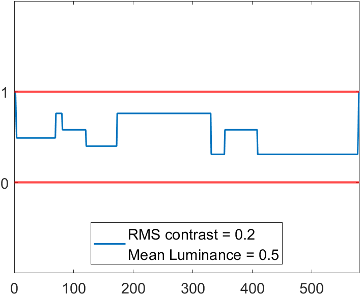
Fig.7a - Original
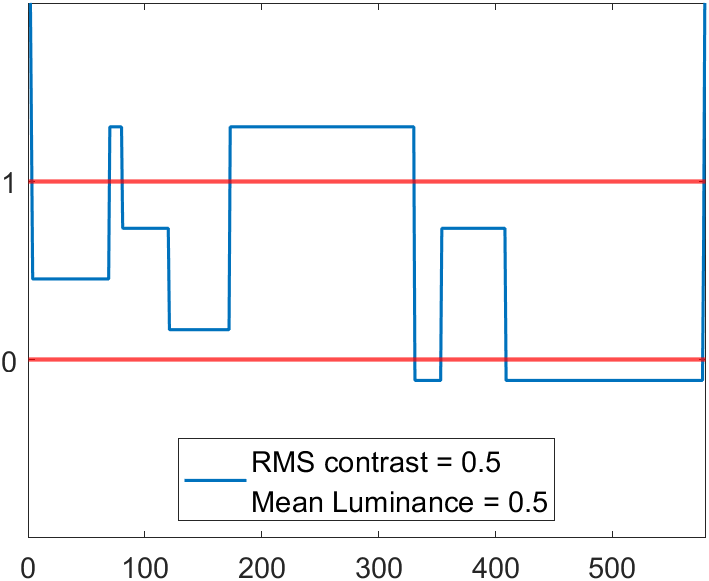
Fig.7b - After RMS contrast adjustment, before clipping
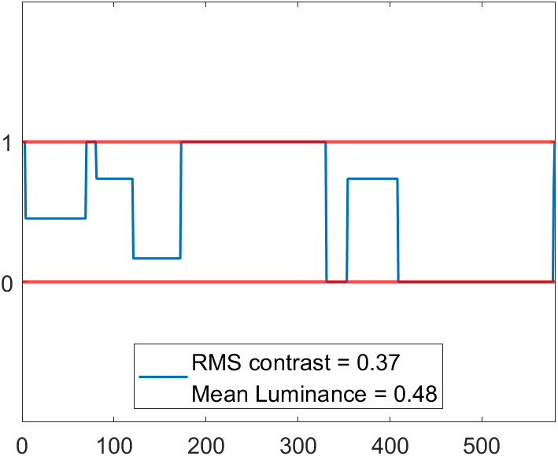
Fig.7c - After RMS contrast adjustment & clipping
Mean Luminance Adjustment & Clipping
Fig.8a - Original
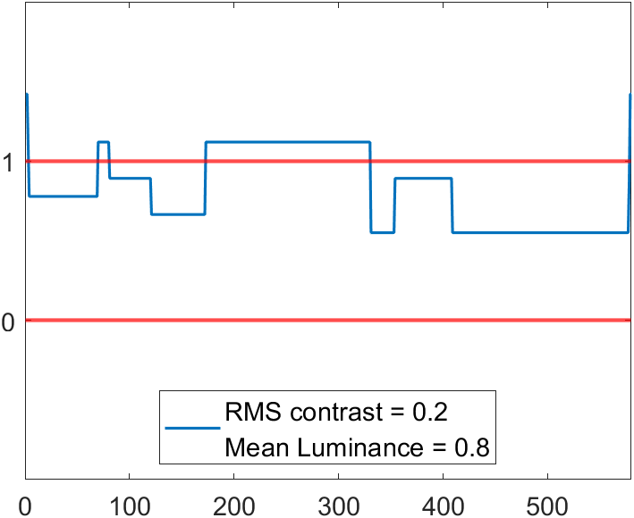
Fig.8b - After mean luminance adjustment, before clipping
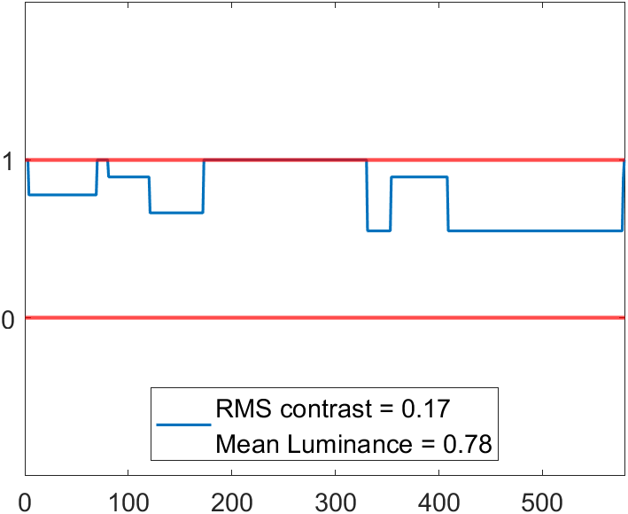
Fig.8c - After mean luminance adjustment & clipping